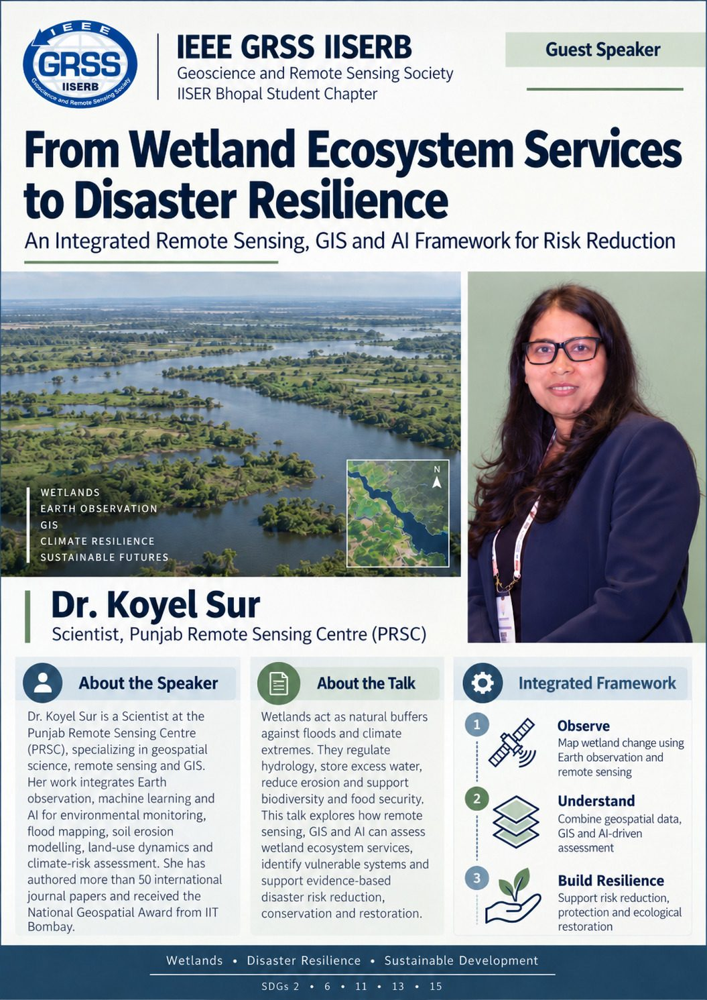
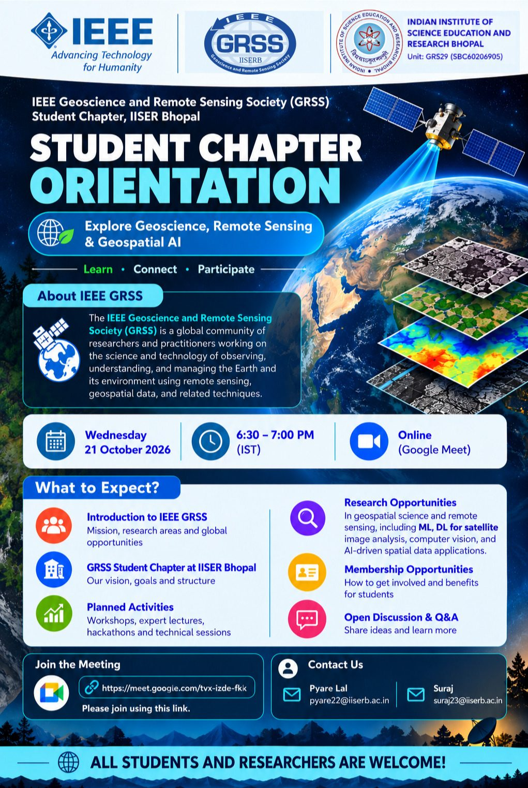
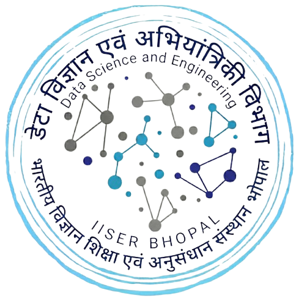
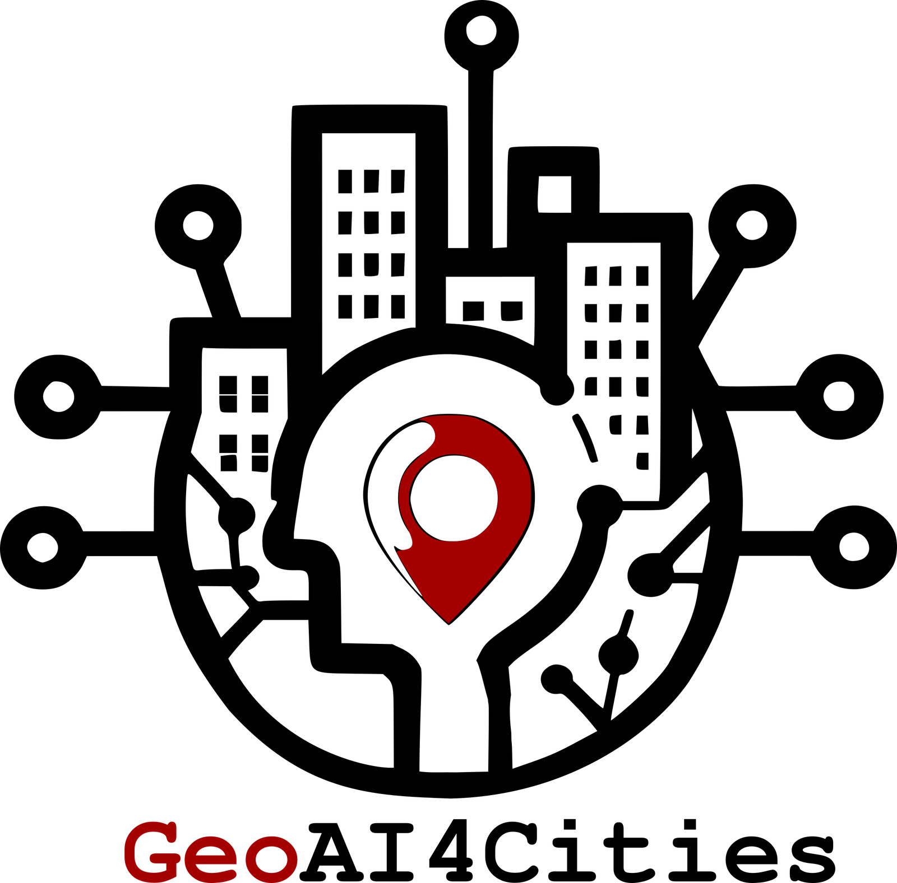

Next up
November 2026 · Expert Talk Series
Expert Talk 2
Speaker and date to be announced. Online, open to all.
Technical Date to confirm
December 2026 · Workshop 1
GIS Tools and Applications
Hands-on, laptop-in-hand session: fundamentals first, then GIS tools and a little coding. Registration Rs 100.
Technical Date to confirm
What we do
Six activity pillars for 2026-27, announced at the chapter orientation on 21 October 2026.
Expert Lecture Series
Monthly talks by scientists and practitioners in remote sensing, GIS and Earth observation.
Hands-on Workshops
Three workshops across the year: GIS tools, 3D reconstruction from satellite images, and end-to-end GeoAI.
Weekend Concept and Code
One small AI concept, coded from scratch, every weekend from November 2026.
Geospatial Python Series
Three tracks: machine learning, deep learning and 3D vision for geospatial data.
Paper-Reading Group
Foundation models, JEPA and transformers for Earth observation, read and discussed together.
Hackathon
A flagship geospatial data challenge in May 2027, with prizes.
Recent events

Saturday, 24 October 2026 · Online
Expert Talk 1: From Wetland Ecosystem Services to Disaster Resilience
Dr. Koyel Sur, Scientist at the Punjab Remote Sensing Centre, on remote sensing, GIS and AI for wetland monitoring and risk reduction. 29 participants and fourteen questions.

Wednesday, 21 October 2026 · Online
Student Chapter Orientation
The first general meeting of the chapter: what IEEE GRSS is, our team, the 2026-27 roadmap, research opportunities and how to join. 34 participants.
About the chapter
The IEEE GRSS Student Branch Chapter at IISER Bhopal was approved by IEEE on 3 August 2026 and is run by an elected student officer team with a faculty advisor. It is a chapter of the IEEE Geoscience and Remote Sensing Society under the IEEE Student Branch of IISER Bhopal, within the IEEE Madhya Pradesh Section.
Vision
Build a vibrant community at IISER Bhopal that advances geoscience, remote sensing and geospatial AI through learning, research and collaboration.
Affiliations


